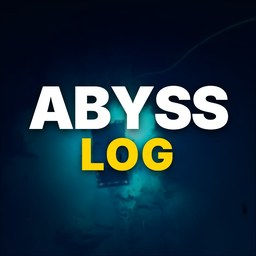

The Abyss Log
Real footage from the deep ocean.
The Abyss Log is a YouTube channel of narrated documentaries about the deep sea. Every episode is built from real footage filmed by research vehicles, mostly from NOAA Ocean Exploration's public-domain archive, with every location labeled on screen and every fact sourced in the description.
A new documentary every week.